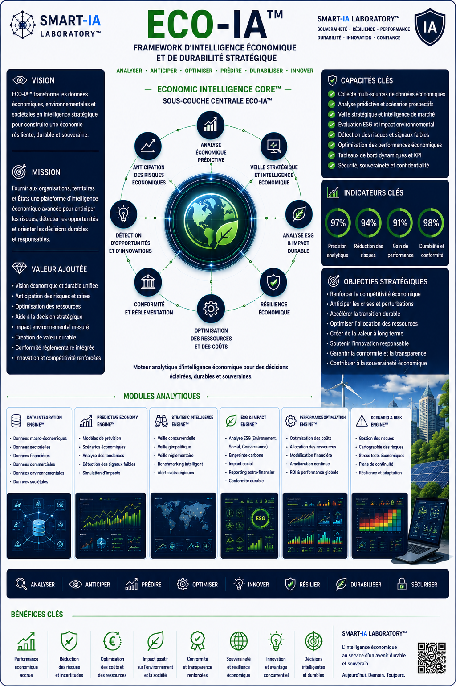

SMART AGRICULTURE MONITORING™
Module dédié à la supervision intelligente des cultures et de la production agricole.
- Analyse croissance végétale
- Détection anomalies terrain
- Monitoring drones agricoles
- Optimisation rendement agricole
Advanced Strategic Artificial Intelligence Research
___
Une architecture de frameworks IA conçue pour transformer
les données complexes en décisions exploitables.
ECO-IA™ transforme les données environnementales en système intelligent d’analyse agronomique, de supervision terrain et d’aide à la décision.
En combinant imagerie satellite, drones agricoles, capteurs IoT, météo intelligente, biomasse et intelligence artificielle analytique, ECO-IA™ permet une lecture avancée des écosystèmes naturels et agricoles.
Le framework est conçu pour les exploitations agricoles, l’analyse environnementale, la gestion hydrique, la surveillance des cultures et l’optimisation des ressources naturelles.
Une synthèse visuelle du framework ECO-IA™, de sa sous-couche Economic Intelligence Core™, de ses modules analytiques environnementaux, économiques et stratégiques.

AGRO-INTELLIGENCE CORE™ constitue le moteur analytique de supervision agronomique et environnementale.
Cette sous-couche corrèle les données météorologiques, les capteurs terrain, les images satellites, l’humidité des sols et les flux biologiques afin de produire une lecture prédictive des écosystèmes.
Module dédié à la supervision intelligente des cultures et de la production agricole.
Module de corrélation environnementale et prévision climatique appliquée aux écosystèmes.
AGRO-INTELLIGENCE CORE™
Agriculture • Écologie • Climat • Terrain • Biomasse • Décision